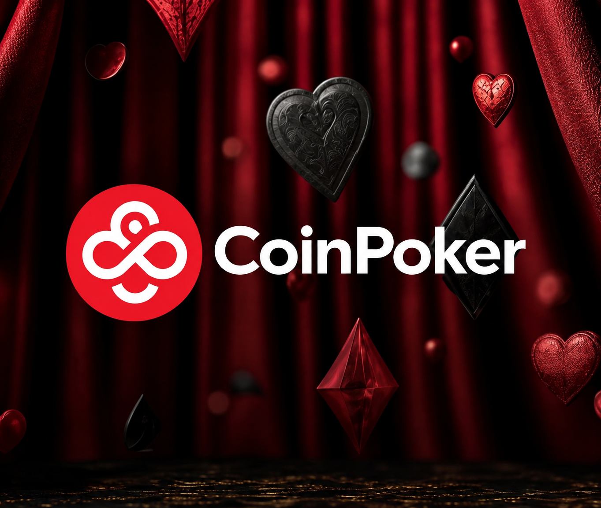
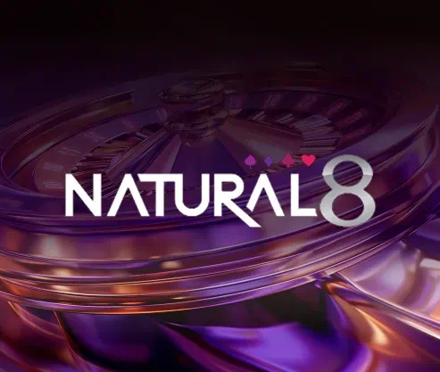
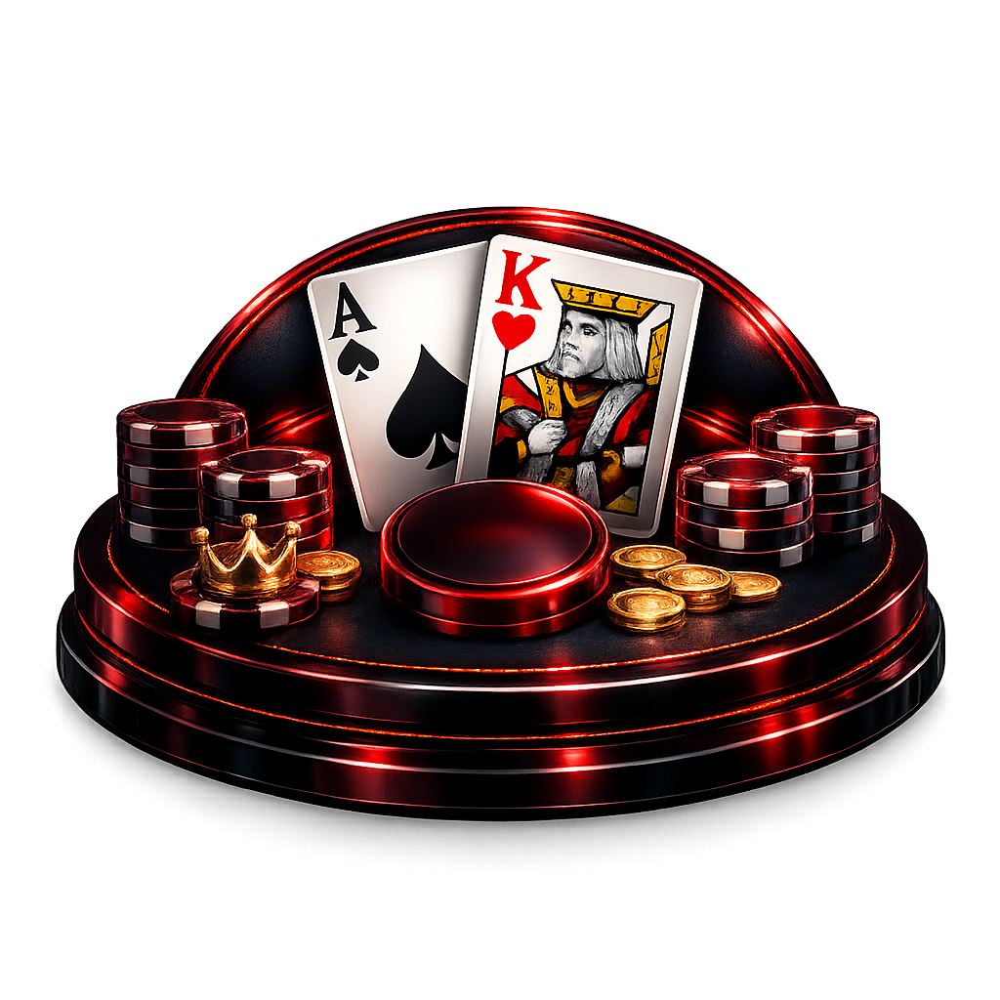
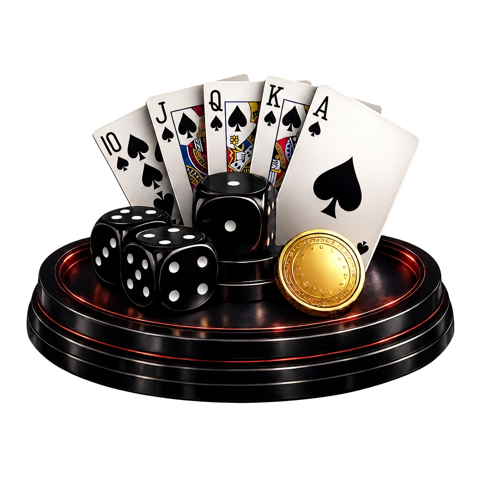
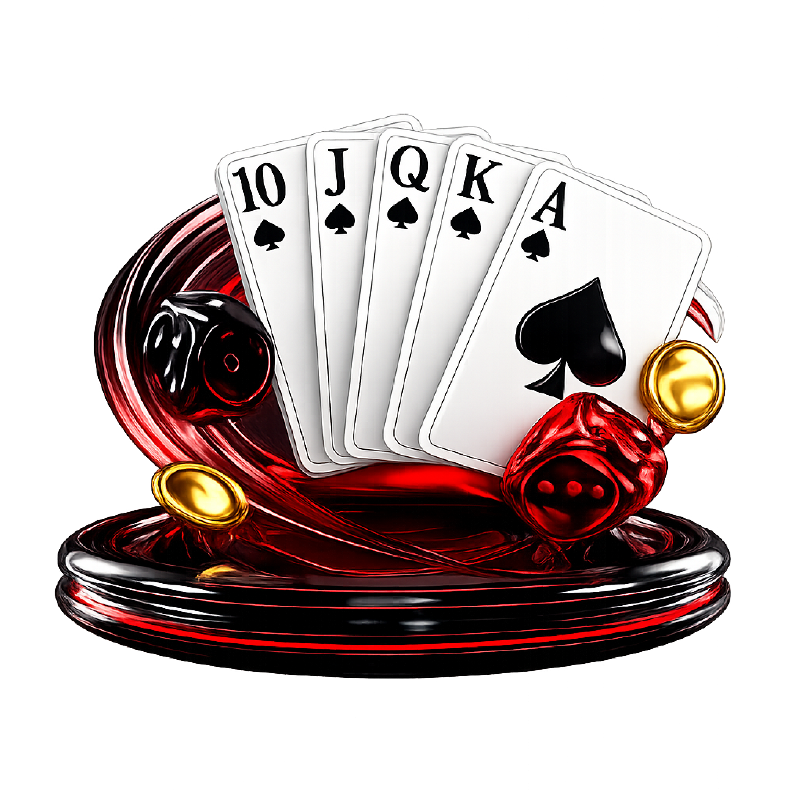
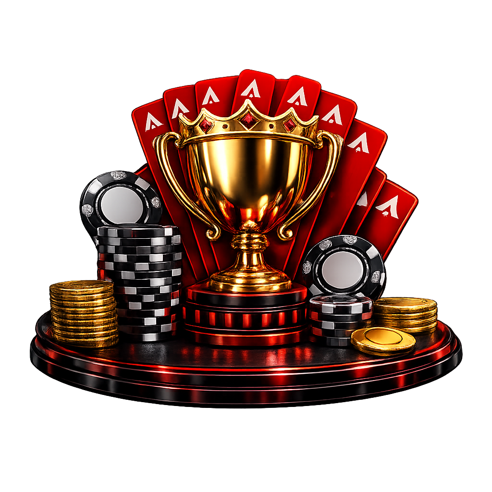

新手友善
整理 QQ Poker、CoinPoker、Natural8、GG撲克四大線上撲克平台，並介紹德州撲克玩法、規則與新手選平台重點，幫助玩家快速找到適合自己的線上德州撲克平台
線上德州撲克是將傳統 Texas Hold’em 德州撲克搬到線上平台的玩法，玩家可以透過手機或電腦參與現金桌、錦標賽、快速桌與不同級別的牌局
相較於一般娛樂城遊戲，德州撲克更重視牌力判斷、位置觀念、籌碼管理與對手行動分析，適合喜歡策略型遊戲的玩家
不同線上撲克平台的定位差異很大，有的偏向新手入門，有的主打加密貨幣，有的則以大型賽事與國際品牌為主。以下整理四個常見的線上德州撲克平台，比較各自的主要特色、適合玩家與推薦重點



除了最主流的德州撲克之外，線上撲克平台通常還會提供短牌、奧馬哈與錦標賽等不同玩法，節奏與難度各有差異

最主流的撲克玩法，包含現金桌、錦標賽與快速桌，也是多數平台的核心牌局。

移除 2 到 5 的牌組，節奏更快，強牌出現頻率更高，牌局變化更激烈。

玩家手牌更多，組合變化大，讀牌與計算難度提高，適合進階玩家。

固定買入、多人競爭排名，籌碼與盲注結構隨時間變化，適合喜歡賽事型玩法的玩家。
選平台前先想清楚兩件事：自己習慣的入金方式，以及想玩的牌局類型。方向確定後，再從介面、玩家數與賽事資源去比較
一般娛樂城遊戲，例如老虎機、輪盤或骰寶，玩家對局的對象是遊戲本身或莊家，結果主要由機率決定
德州撲克則是玩家與玩家之間的策略遊戲。同樣的一手牌，在不同位置、不同對手、不同籌碼深度下會有完全不同的打法，因此更重視判斷、心理與長期策略
如果你想先了解娛樂城中的電子撲克與其他經典桌面玩法，可以前往桌上遊戲推薦頁；本頁則聚焦在玩家對玩家的線上德州撲克平台
想開始體驗線上德州撲克？你可以先從四大品牌比較開始，依照自己的需求選擇適合的平台
如果你是新手，建議先查看 QQ Poker 與 CoinPoker；如果你想了解更多亞洲玩家熟悉的平台，也可以比較 Natural8 與 GG撲克
查看平台推薦 →看完線上德州撲克，再深入了解其他遊戲類型、平台評測與優惠活動，找到最適合你的玩法